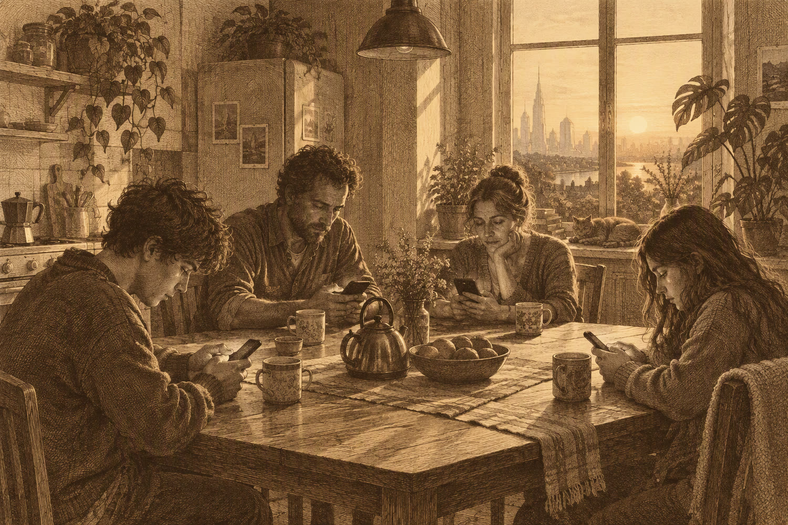

Four minutes in the wrong kitchen
Nour Haddad spent one afternoon at a table that was not hers. She has been trying to describe it for eight years, and the Bureau has been trying to stop her.
Read the diary
We arrived at 15:40 and the table was already laid. Four cups, one teapot, a bowl of pears that nobody touched. The guide told me the booking was under my family's name, which is not my name, and that I should sit down and not introduce myself. I have never been so visible while saying nothing.
One of them looked up once, at the window. That was the whole event. I have spent eight years trying to explain why it undid me: four people in a kitchen, all of them somewhere else, and the afternoon holding them anyway.
At 17:20 the networks came back and the room filled with sound. The guide put a hand on my shoulder. We left before anyone could ask who I was. I have not looked at my phone at dinner since. I am writing this eight years later and it is still true.